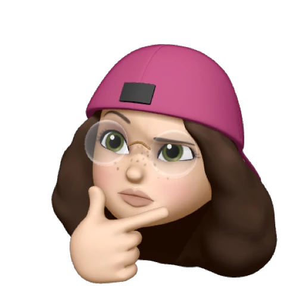
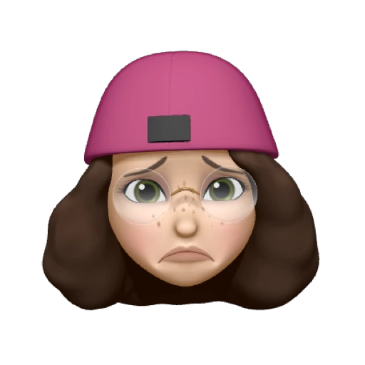
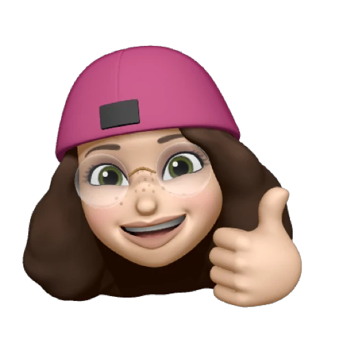
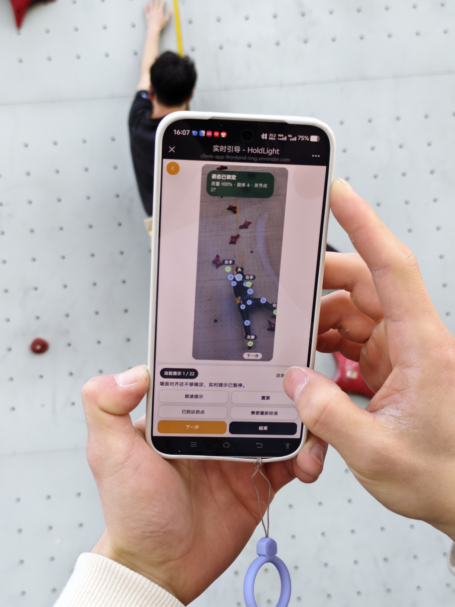
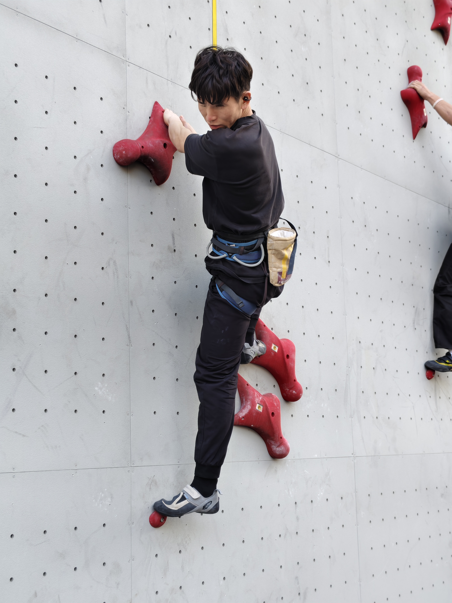
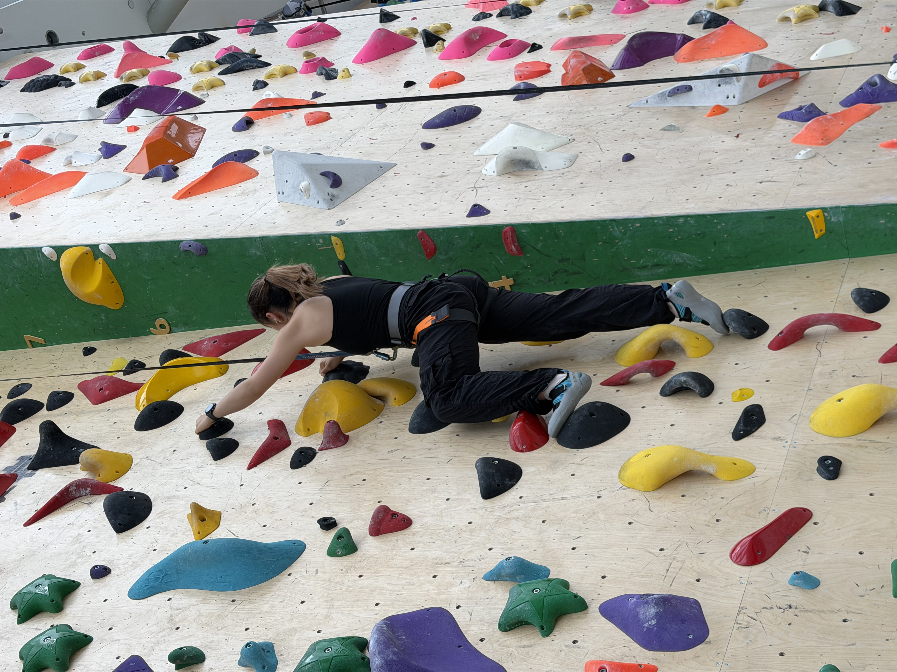

User Journey Map - HoldLight
Stages
Set Up
Preview
Climb
Reflect
User action
Learns that HoldLight offers route preview, brief voice guidance, and fallback support. Chooses a beginner route with support.
Selects accessibility preferences and positions the phone to frame the climbing wall.
Reviews start holds, finish holds, route direction, and key transitions before leaving the ground.
Climbs with short next-hold cues; repeats, pauses, or asks for help when needed.
Reviews the session, understands progress, and decides what to focus on next.
Pain point
Support options are not clear before climbing. Route choice can depend on inaccessible visual information.
Setup can feel time-consuming or fragile. The climber needs to trust the system is ready.
Verbal explanations are hard to remember once effort begins; too much detail can add cognitive load.
Long or mistimed guidance interrupts climbing rhythm and increases uncertainty.
It can be unclear what was achieved, where guidance failed, or where extra support was needed.
Emotion
Curious but cautious
Could this help me climb more independently?

Hopeful but slightly anxious
I want setup to be quick and reliable.

More prepared
Overview first, details later.

Tense but focused
Keep cues short and well-timed.
Relieved and reflective
What should I improve next?
Opportunity
Make route access and support options obvious from the first screen.
Provide a short guided setup flow with confirmation and saved preferences.
Provide layered route preview: overview first, then details on demand.
Use brief direction-first audio cues with explicit fallback options.
Provide a simple session recap with progress and suggested next focus.
Design response
Show scan-first entry, beginner route context, and a clear example of preview plus on-wall guidance.
Use large controls, saved accessibility settings, camera framing guidance, and assistant confirmation.
Show start/end holds, route direction, key transitions, and optional hold-by-hold detail.
Provide audio-first guidance, short cue phrasing, repeat/pause controls, and low-confidence fallback messages.
Show completed progress, support moments, repeated cues, fallback events, and a next-step suggestion.
Evidence of Life

Pilot Test
Early pilot testing
Initial testing with relevant participants helped us check whether the support concept matched real climbing needs before deeper prototyping.

Pilot Test
Feedback collection
Early feedback exposed where route explanation, phone handling, and audio-first guidance needed clearer structure for accessible use.

Pilot Test
Concept validation
The pilot sessions grounded the project in real accessibility concerns instead of assuming that visual route information could simply be translated.

Team Test
Internal flow check
Team testing let us quickly verify the scan-first flow, screen sequence, and interaction logic before asking participants to try it.

Team Test
Prototype rehearsal
Internal rehearsals helped us refine what users should hear, tap, and confirm during route preparation and guidance.

Recruitment
Participant contact
Recruitment and preparation messages show how we arranged testing around participant availability, context, and accessibility needs.

Interview
Needs discussion
Interview communication helped translate participant expectations into requirements for clearer route preview, controls, and fallback support.

Prototype
Prototype validation
Internal prototype checks verified whether route scanning, cue controls, and accessibility settings were visible and understandable in sequence.

Onsite Test
Climbing trial
The climbing trial showed how guidance must stay short, timely, and recoverable while the participant is already moving on the wall.

Onsite Setup
Full test setup
The final onsite setup captured the complete testing context: phone framing, guide support, climber movement, belayer safety, and real wall constraints.
Must-Have Requirements
Why These Requirements Make HoldLight Playful
For HoldLight, “playful” does not mean adding points, badges, or competitive rewards. Indoor climbing is already a playful problem-solving activity: climbers read the route, make decisions, test movements, and adjust their plan on the wall. Our requirements aim to preserve this self-directed puzzle experience for blind and low-vision climbers by reducing unnecessary barriers without removing challenge, rhythm, or personal agency.
01
Layered Route Preview
Users must understand the route before climbing through overview, segment, and optional detail.
This user requirement comes from the need to reduce uncertainty before the climb. HoldLight should support a structured route preview, so blind and low-vision climbers can build a mental model of the route before starting.
The design uses progressive disclosure: overview first, then route segments, then optional detail. This supports accessibility by avoiding one dense explanation and lets users choose the level of information they need.
Evaluation-driven iteration shaped this requirement because early feedback showed that long route descriptions were harder to remember. The final requirement keeps the climber in control while still preparing them for movement.
02
Brief Direction-First Audio Guidance
Users must receive short, actionable cues during climbing without breaking rhythm.
Audio guidance should prioritise direction and next action first, such as hand, direction, and step level. This avoids over-instruction and supports safer real-time movement while climbing.
For accessibility, the cue must be short enough to understand while the user is already using their body and attention on the wall. It should support action, not interrupt the climber with screen-like information.
This requirement reflects user-centred design and iteration: testing moved the guidance away from long explanatory sentences toward brief phrases that preserve rhythm, confidence, and independent decision-making.
03
Recoverable Fallback and Human Help
Users must be able to repeat, pause, request more detail, or ask for human support.
When cues are missed, unclear, or low-confidence, the system should make recovery explicit. The climber should stay in control through repeat, pause, detail, and human-help options.
This is an accessibility requirement because assistive systems must not hide uncertainty. A blind or low-vision climber needs clear ways to recover without guessing what the system meant or waiting passively for help.
Evaluation informed this requirement by showing that fallback is part of the core experience, not an emergency add-on. Human support remains available, but routine information support should be reduced where HoldLight can help reliably.
Together, these requirements support a playful accessible climbing experience by preserving challenge, autonomy, rhythm, and enjoyment while making route information more accessible.
Core product behaviour
- Start camera scan from a clear primary action.
- Confirm the detected route before guidance begins.
- Provide repeat, pause, and fallback controls.
- Record a basic session summary for reflection.
Readable and audio-first support
- High contrast and large readable controls.
- Screen-reader-friendly headings and labels.
- Short speech cues with repeat support.
- Visible focus states and non-colour-only status cues.
Requirement Traceability
| User Pain Point | Requirement | Feature |
|---|---|---|
| Cannot distinguish route clearly. | Route preview. | Camera scan + route confirmation. |
| Cannot read screen while climbing. | Audio-first guidance. | Short speech cues. |
| Gets confused when system fails. | Recovery support. | Repeat / pause / fallback. |
| Assistant support can become constant and tiring. | Bounded human handoff. | Assistant confirmation and request-help states. |